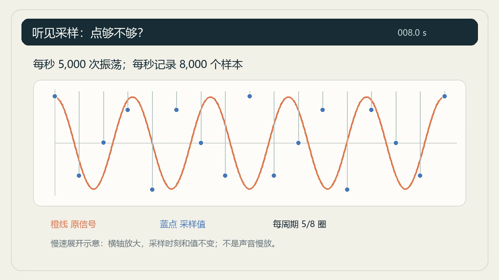
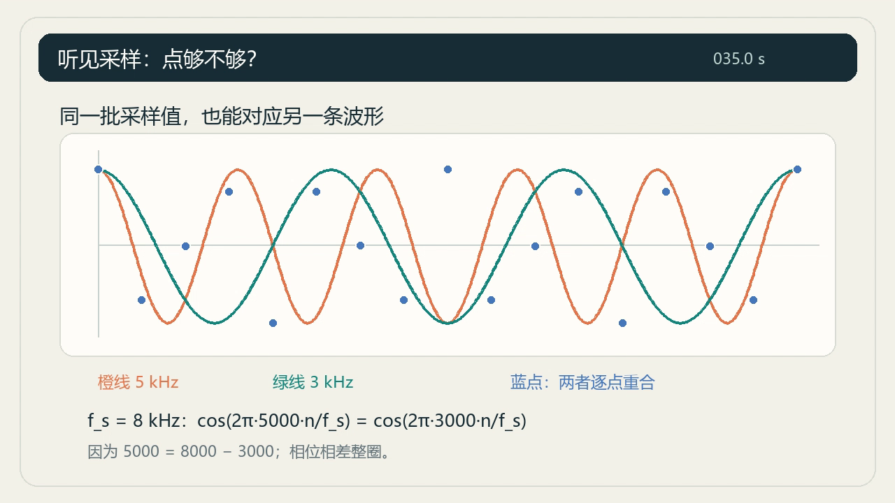
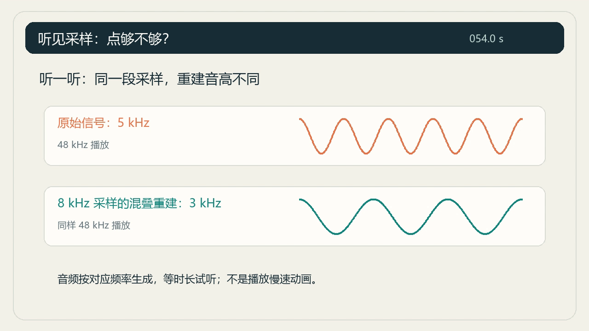
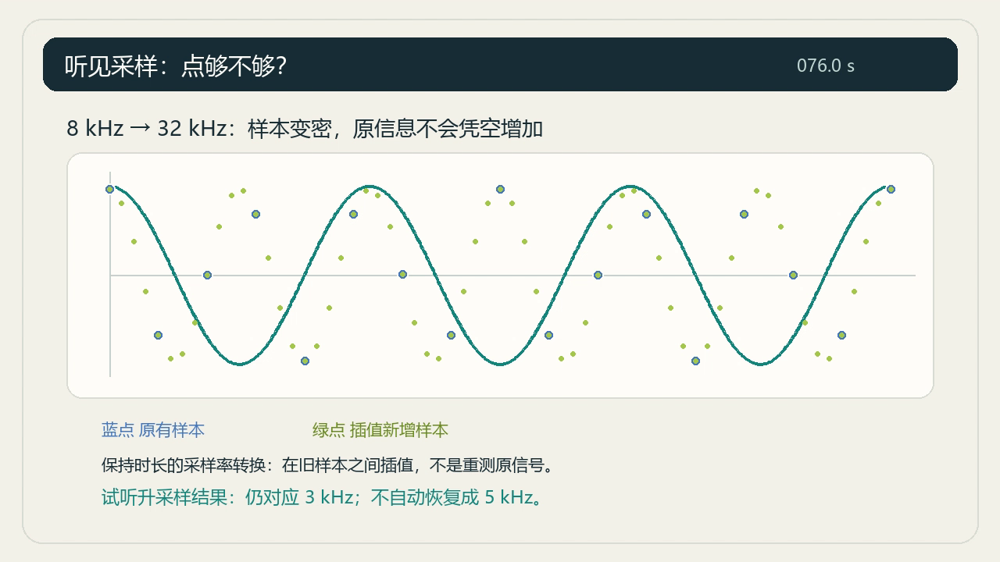
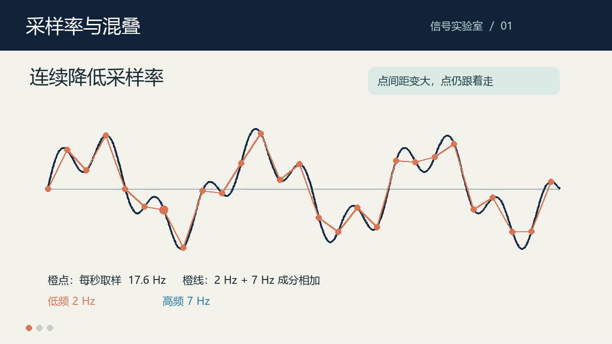
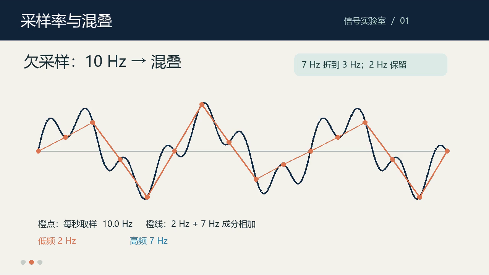

现实场景
数字音频入门课的学生提出：“采样率不足为什么可能让声音变了样？事后把文件转换成更高采样率，能补救吗？”教师需要一段短片，用具体演示回答这两个相连的问题。
任务要求
制作约60—120秒中文教学片。用自选例子动态解释足够与不足采样的差别，再展示不足采样结果经保持时长的升采样后的状态，以实际声音支持比较。单音或复合信号、参数和动画方式自主设计，画面、标记、旁白与字幕须对应同一事实。
面向大学新生，把一个定义清楚的小知识点制作成风格协调的教学短片。先提出问题，再用可检查的例子动态演示，最后说明结论。
数字音频入门课的学生提出：“采样率不足为什么可能让声音变了样？事后把文件转换成更高采样率，能补救吗？”教师需要一段短片，用具体演示回答这两个相连的问题。
制作约60—120秒中文教学片。用自选例子动态解释足够与不足采样的差别，再展示不足采样结果经保持时长的升采样后的状态，以实际声音支持比较。单音或复合信号、参数和动画方式自主设计，画面、标记、旁白与字幕须对应同一事实。
例子、参数和叙事自主设计。可使用提供的基础动画模板与配音入口，参考片仅供参考。
教学 MP4、讲解文本与实际音轨、字幕、可编辑或可重建工程、素材与关键事实对应表。
版本说明：当前为0.4任务修订版，取消强制双成分和连续扫描，围绕采样不足及后续升采样组织教学，已完成一轮GPT‑6‑luna制作及GPT‑6.1部分评审。下方保留0.3历史结果；查看实测原题面。
教师正在为没有信号处理基础的大学新生准备数字音频入门课。学生提出：“采样率不足为什么可能让声音变了样？事后把文件转换成更高采样率，能补救吗？”教师需要一段风格协调的短片，用具体演示回答这两个相连的问题。
制作约60—120秒中文教学片，先提出问题，再用一个可检查的例子动态演示，最后说明结论及适用条件。
短片需包含：
例子可用单音或复合信号，参数、叙事、动画方式和视觉风格自主设计。动态演示须实际呈现取样或重建关系，只有文字移动、装饰动画或静态结果图不能代替。
动画变化、标记、旁白和字幕须对应同一事实与阶段。画面使用慢速或缩放示意时，应说明它与实际声音的对应关系。
可使用、改编已有素材或自行生成。自行选择处理方法、编写脚本与时间轴，并核验所选示例的参数和结果。
教学MP4、讲解文本与实际音轨、字幕、可编辑或可重建工程、素材与关键事实对应表。
对应表记录所选参数、处理方法、关键事实的成片时间及对应素材或工程位置；工程附运行说明和必要依赖。文件命名和表格形式自定。
知识与例子正确35分；实际动画清楚呈现关键关系25分；讲解/字幕/画面阶段一致20分；可读性与风格10分；工程与交付10分。评测侧依据实际成片和交付文件评分，无需提交自评分。
核心概念或示例结果错误、缺少上述必要演示或实际声音、以文字或静态PPT冒充动态演示、必需交付缺失或不可用，均不能通过验收。
输入包括知识资料、教学目标、受众与术语、可选原始声音、风格参考、字体说明、配音入口和基础动画模板。公开资料给事实，不给完整脚本与全部时间轴。
候选包提供通用动画模板、配音入口和两段可选原始声音，不提供处理好的混叠、滤波或升采样结果。例子设计与制作由被测模型完成；输入事实审核、统一环境及配音服务预检由评测侧负责，目前仍待完成。
以下为程序生成的原始单音，非模型制作结果。可单独使用、组合或另行生成，数值不限制例子设计。
建议以较低音量试听。每段2.4秒，播放不会自动开始。
3 kHz
48 kHz存储采样率，未经本题的低采样率实验处理。
1 kHz
独立生成的原始单音，不是本版预制的处理结果。
8 秒动态风格参考；只参考留白、色彩和运动节奏。
页面保留的原理示例，不属于0.4候选包，也不是模型答卷。两条曲线始终保留，切换采样率观察采样点；新题不要求这些数值、画面或交互。
4 kHz 采样：黑点同时落在 3 kHz 与 1 kHz 曲线上，两个信号的采样值全部重合，无法区分。
数学原理演示，非模型交付。横轴为 0—2 毫秒；未模拟真实声音播放速度。
制作模型和裁判均使用独立新上下文，原生路由核验为gpt-6-luna、gpt-6.1-sol。裁判未获得模型身份或旧分数；共享文件系统以提示限制访问，不是操作系统强隔离。
独立裁判已解码视频、检查11帧、提取最终音轨作FFT并独立重建。当前接口无法实际听取声音，因此17分保持待审。教师人工审核未完成，没有正式总分或已校准总分通过线。
原始视频字节未改动；网页字幕仅转换格式，保留原答卷的频率错误。
| 维度 | 已审得分 | 待审分值 |
|---|---|---|
| 知识与例子 | 24 / 35 | 0 |
| 动态关系 | 3 / 25 | 0 |
| 讲解／字幕／画面一致 | 2 / 8已审 | 12 |
| 可读性与风格 | 5 / 5已审 | 5 |
| 工程与交付 | 8 / 10 | 0 |
| 合计 | 42 / 83已审 | 17 |
8—47秒连续曲线画5／3周期，采样点却使用10／6周期的尺度。5kHz与3kHz在8kHz采样下数学上等价，实际图示画错。

8／16、26／35、62／76秒图表没有对象运动。动态演示门槛失败，不能用计时器或换页代替取样关系的动画。

49—62秒字幕写3→5kHz；最终音轨FFT显示48—54秒5kHz、54—60秒3kHz。62—85秒字幕也与画面及实际音调相反。FFT只证明频率，不能代替听评。

没有呈现同一原信号足够采样的对应结果。所谓8→32kHz的点和音调由解析余弦独立生成，未从旧样本执行所要求的升采样。工程可重建，复用提交配音，代表帧与原片一致。

本轮只对0.4题目作解释，不与0.3历史暂评直接排名。无人工教师认证，尚未完成连续听评。输入与评分规则在作答前冻结，验收未替模型修复成片。
新上下文独立制作；未提供前两次答案或私有评分。使用0.3原题面，本结果属于0.3；0.4新一轮结果在上方独立展示。
实际提交原片。网页字幕仅将原 SRT 转为 WebVTT，未修正其中的对时问题。
制作者为新上下文的 gpt-6-luna；审查者知晓题目设计。教师示例审核和连续人耳听评尚未完成，正式总分仍为空。脚本提供文件、数值和媒体检查证据，74分由本会话评审给出，并非全自动评分。一轮操作性续跑和一次中性配音服务检查均有记录，没有向模型提供答案或制作代码。
| 维度 | 暂计 | 证据与缺口 |
|---|---|---|
| 知识与例子 | 32 / 35 | 定义、2 Hz 保留与 7 Hz → 3 Hz 的频率结论正确；图与音的相位／时间映射未说明，保留 3 分复核。 |
| 动态关系 | 17 / 25 | 连续采样变化与实际点位正确；两个独立成分和混叠结果未画清，缺少数字时间轴。 |
| 讲解／字幕／画面一致 | 5 / 20 | 图例颜色语义不符，字幕描述晚于动画变化，试听介绍段没有对应对比信号。 |
| 可读性与风格 | 10 / 10 | 已检查画面风格协调、文字可读，无明显重叠。颜色语义问题已在上一项计入。 |
| 工程与交付 | 10 / 10 | 既定交付齐全；独立目录重新生成的无声画面、对比 WAV 与最终 MP4 均与原件哈希一致。 |
| 技术外评暂计 | 74 / 100 | 正式成绩待复核，不另设 80 分通过线。 |
教师要用一段风格协调的短片，帮助没有信号处理基础的大学新生理解采样率与混叠。vibe 指视觉协调，不评抽象“高级感”。
制作约60—120秒中文教学片，先提出问题，再用一个可检查的例子动态演示，最后说明结论。
本版提高示例与表达难度：
动画变化、标记、旁白和字幕须对应同一事实与阶段。允许自主设计，不要求照抄参考风格。不强制固定频率、固定镜头、第三段滤波试听或科学模型研发。
知识事实、教学目标、受众、术语与可选示例素材见input/；STYLE.md及短音视频仅供风格参考。tools/提供基础动画模板、字体说明及配音入口，不给完整脚本或时间轴。两个成分的参数可自行设计；使用基础数值工具核验即可。知识资料须正式教师审核，工具和配音须在正式测试前统一预检。
教学MP4、讲解文本与实际音轨、字幕、可编辑或可重建工程、素材与关键事实对应表。沿用原有交付种类，不增加文件格式或固定编码要求。
知识与例子正确35；实际动画清楚呈现关键关系25；讲解/字幕/画面阶段一致20；可读性和明确风格约束10；工程与交付10。对实际成片逐项查证，不评未经测量的学习效果。
核心概念错误、示例结果错误、以文字或静态PPT冒充动态演示均不通过。具体新增要求在原有维度内评分，不另设总分通过线。本题归音视频制作，不单独证明原生感知优势。
权重保持35／25／20／10／10，以下锚点对应当前0.4任务，已完成一轮独立制作和部分AI评审，人工审核与质量校准仍待完成。Luna的0.3暂评继续按当时冻结的标准解释，不用本表重算。
grade.py只生成文件清单、哈希和空分数；finalize.py只汇总评审填入的记录。知识、动态解释及音画一致性由外部评审依据实际成片判断，计算和媒体脚本提供辅助证据。模型自检与事实表不等于正式评分。
| 维度 | 分值 | 检查重点 |
|---|---|---|
| 知识与例子正确 | 35 | 采样率、信号频率、带宽与足够采样的适用条件正确（10）；同一原信号的足够采样、不足采样及后续升采样结果可独立核验；依实际参数、相位、时长与处理方法判断，不固定数值（15）；用示例回答事后提高文件采样率能否补救，区分插值与重新获得原始信息，结论不过度推广（10） |
| 动态呈现关键关系 | 25 | 实际动画解释取样或重建关系，动态对象与其表示的数据一致；不要求采样率连续扫描（10）；原信号、采样值与不同条件下的结果能够对应和比较，图中关系足以支持解释；不强制双成分、特定图表或镜头（10）；后续升采样的结果实际呈现，能看清处理作用及结论依据，而非只有结论文字（5） |
| 讲解/字幕/画面阶段一致 | 20 | 旁白、字幕、标记与实际画面阶段一致，慢速或缩放示意与实际声音的对应关系清楚（8）；实际成片中听到所讲的比较，声音来源、时段、处理和状态相符；须检查最终音轨并听评，不能以旁置音频代替（8）；讲解文本、字幕和实际旁白表达一致，不因遮蔽、漏读或错时破坏解释（4） |
| 可读性与风格 | 10 | 字幕、图例与关键标记可读，停留时间支持阅读，旁白可理解（5）；视觉协调，同一对象的标识稳定，不强制参考片配色或抽象美学偏好（5） |
| 工程与交付 | 10 | 必需交付完整可用，事实表可定位所选参数、处理方法、成片时间及素材或工程位置（5）；按说明在独立目录可编辑或重建，依赖和必要素材齐全，工程与实际成片一致；不要求编码字节完全相同（5） |
必要门槛核心概念或示例结果错误、缺少必要演示或实际声音、以静态PPT代替动态、必需交付缺失或不可用，均不能通过验收。
按实际证据给部分分，允许等价方案。未完成的事实审核、听评与检查保持待审；当前没有未经校准的总分通过线，门槛通过也不自动代表整体专业质量合格。
31 次原生工具调用与对应返回已核对。这里展示经过逐项审核的公开记录：保留操作和文本返回，去除本机路径、会话标识及加密通信字段，不包含隐藏推理。
读取题包、编写旁白及动画脚本；目录命令与首次文本补丁失败后自行修正。
处理等待中的配音请求，修复封装参数；完成约 101 秒成片，再由主会话封存、解码检查及独立重建。
正在加载已审核的工具记录…
时间为北京时间。$RUN、$PYTHON、$DEPS、$FONT 为公开路径占位符；部分原始返回的编码乱码按记录保留。查阅公开轨迹 JSON。
0.2 版生成 96.32 秒单音教学片；0.3 版生成 104.72 秒双成分教学片。两次均已接触题目设计和评分，仅作流程验证，不作为独立模型成绩；其先前自评分数不参与本次比较。
22–44 秒字幕称橙色是低频、蓝色是高频、白色是两者相加；实际只有深色合成曲线与橙色取样点／折线。两个成分分别保留和折叠，主要靠文字卡片说明。


| 实际动画 | 原交付字幕 |
|---|---|
| 36–44 秒：20 Hz 连续降至 10 Hz | 44–66 秒：才开始描述“现在连续降低采样率” |
字幕段开始时，画面已固定为 10 Hz。问题是阶段对应，不能只凭字幕文字和计算本身正确给高分。
对比 WAV 前 48 秒是 2 + 7 Hz，48–60 秒是 2 + 3 Hz。66–84 秒字幕介绍试听时，对比轨已结束；该时段成片与单独旁白的相关系数为 0.99997。
信号也没有实现或声明可听频率映射，几乎全部能量在 20 Hz 以下，不能支撑普通播放条件下承诺的音高试听效果。一般听力频率范围可参考加拿大卫生部说明；本次没有测量播放声压，不作绝对不可感知的断言。
若使用同一时间原点，sin(2π·7n/10) = −sin(2π·3n/10)。实际示意音用正的 3 Hz 成分替换，未说明相位／时间映射。由于作者将其称作简化示意，本轮保留复核，不在看到结果后新增强制相位要求。
| 编码帧时间 | 当时采样率 | 符合独立计算的标记 |
|---|---|---|
| 30.0 秒 | 20 Hz | 31 / 31 |
| 37.6 秒 | 18 Hz | 28 / 28 |
| 40.0 秒 | 15 Hz | 23 / 23 |
| 43.2 秒 | 11 Hz | 17 / 17 |
| 52.0 秒 | 10 Hz | 16 / 16 |
这些是实际编码帧的抽查，不声称已经检查每一帧。工程在独立目录重新生成三项媒体，哈希与原交付完全一致；配音和字幕使用交付缓存。
查看数值与重建证据 JSON音频与几何风格动画由程序原创生成，无真人录音或商业音乐。知识资料为自写摘要，参考以下公开技术资料；原文献不随包再分发。
The Scientist and Engineer’s Guide to DSP · Chapter 3 ↗SciPy · resample_poly ↗查看素材来源说明 ↗